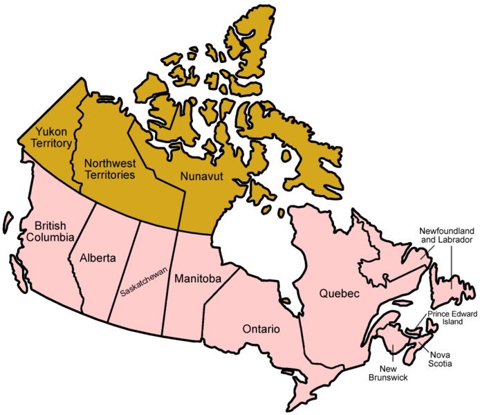

Provinces
Canada is split up into 13 different provinces, or ten provinces and three territories, technically. Each province has its own geographics and demographics.
In essence, provinces are regions which receive their authority through Canada’s Constitution Act. The Constitution Act gives certain exclusive powers to provincial governments, while the federal government of Canada has the rest of the power.
The provinces get to make certain decisions regarding their responsibilities and governance by themselves. By contrast, the territories of Canada have their responsibilities and powers delegated to them directly by the federal government.We will be talking about the tree territories here, but all provinces and territories are the follow:
- Alberta
- British Columbia
- Manitoba
- New Brunswick
- Newfoundland and Labrador
- Northwest Territories
- Nova Scotia
- Nunavut
- Ontario
- Prince Edward Island
- Quebec
- Saskatchewan
- Yukon
Alberta
One of Canada’s western provinces and is the country’s fourth-most populated province. It has a population of around 4,068,000. The province’s capital is Edmonton. Alberta has an extremely strong economy, driven primarily by oil, natural gas, forestry, and tourism. It has both large mountains and wide open plains, and the region is mainly covered by boreal forest.
British Columbia
British Columbia is Canada’s westernmost province, and it is slightly larger than Alberta in terms of population, with a population of around 4.8 million people. It is located on North America’s West Coast, between the Rocky Mountains and the Pacific Ocean. The capital is Victoria, which is the 15th most populous metropolitan region in the country. BC’s economy was mainly dependent on resources, such as logging and mining. In recent years service industry jobs and construction jobs have taken over the region. The region has mild and rainy climates as well as subarctic climates. Most of the province is subarctic in nature.
Manitoba
Manitoba is Canada’s fifth most-populous province, and it has an estimated population of around 1.3 million people. The province’s capital is Winnipeg. Most of Manitoba is subarctic, though it has some warm and humid continental regions in the southern part of the province. Manitoba’s Economy is mainly dependent on natural resources for its economy, relying on industries like mining, forestry, and agriculture, in addition to tourism. There are over 200 different languages spoken throughout Manitoba.
New Brunswick
New Brunswick is one of Canada’s eastern provinces, set on the Atlantic coast of North America. Its proximity to major cities in the US means that the province is a major center of tourism, which factors heavily in its economy along with forestry, fisheries, and agriculture. Most of New Brunswick has a humid continental climate, though the northern regions of the climate are subarctic. Cost of living in New Brunswick is fairly low, and the approximately 752,000 people who live there have a fairly high standard of living.
Newfoundland and Labrador
Newfoundland and Labrador is Canada’s eastern-most province. The province has an estimated population of 528,000 people. Most of the province’s population lives on the island of Newfoundland, rather than the mainland region of Labrador. This is because Newfoundland has a warm-summer humid continental climate, in contrast to the harsher subarctic climate of Labrador. The province has a very low crime rate and is known for being very friendly. Unfortunately, the province has also experienced an economic depression lately, following the collapse of fisheries. The province also relies on oil refining, mining, agriculture, and tourism. The island is home to many muskrats, ermine, red foxes and arctic hares.
Nova Scotia
Also located on the Atlantic Coast, Nova Scotia is the second-smallest of Canada’s provinces in terms of landmass. The province is densely populated, with approximately 925,000 people living in only 55,200 square kilometers of land. The majority of Nova Scotia’s climate is warm during the summer since the temperature is moderated by the ocean. Nova Scotia’s economy has traditionally lagged behind the rest of Canada in terms of growth. Nova Scotia relies on a defense and aerospace to support it, along with agriculture and fishing.
Ontario
Ontario is the populous province in all of Canada, with approximately 40% the country’s population living there. It’s home to about 13.5 million people and the capital is Toronto. Ontario’s economy is strong and specializes in finance, manufacturing, education, the arts and sciences, and tourism. The lower half of the province is mainly continental, with warm summers. The northern half of the province can be rather cold, with subarctic regions experiencing cold northern air.
Prince Edward Island
Prince Edward Island is sparsely populated, with only around 144,000 people living there. Its capital is Charlottetown, and the province is home to aerospace and bioscience industries. There are also several IT and video game development firms based there. The province sees low crime rates, low housing costs, and a fairly mild climate throughout most of the year.
Quebec
Quebec is the largest eastern province in Canada. It is bordered to the north by the Hudson Bay and Newfoundland and Labrador. The province’s capital is Montreal, and the province has a population of around 8,165,000 people. Quebec’s climate is continental is the lower third of the province, subarctic in the middle third, and tundra in the upper third. Quebec’s economy is mainly dependent upon knowledge and R&D. Other major industries for the province are aerospace, IT, software development, and multimedia. The region has over one million lakes and rivers flowing through it.
Saskatchewan
Saskatchewan is in the middle of Canada and is home to approximately 1,090,000 people. The province’s capital is Regina, and the province has a variety of climates in it. The northern half of the province is subarctic, but the lower half of the province is both cold semi-arid and warm semi-humid continental. Saskatchewan’s economy is diverse, based around foresty, agriculture, fishing and hunting. Mining for potash and uranium are substantial sources of revenue for the province.